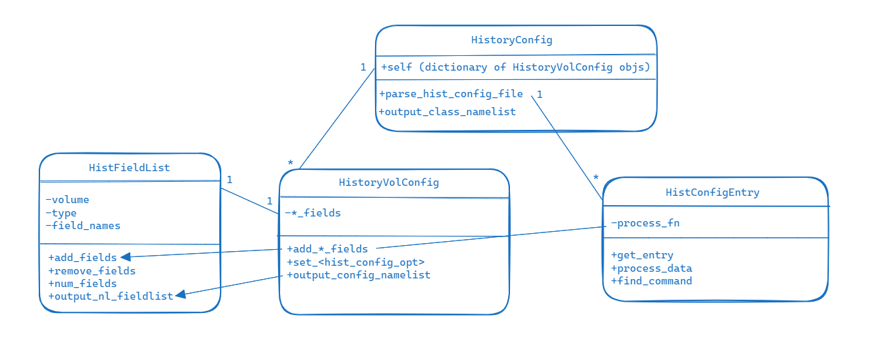
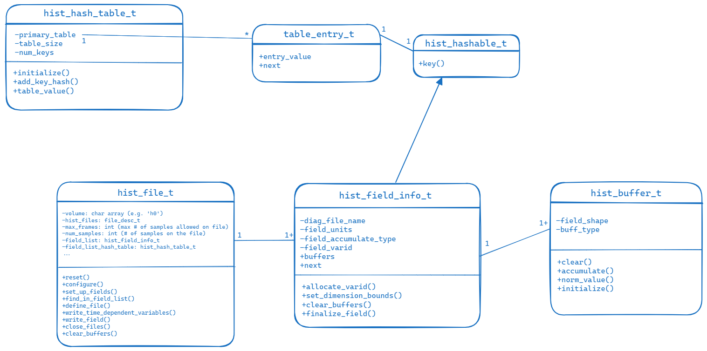

History & model output
CAM-SIMA history is the mechanism for configuring and generating diagnostic output from a model run. It is also used to generate initial-data files and aids in the model-restart process by saving the state of diagnostic fields whose processing window (e.g., averaging, standard deviation) crosses a restart-write cycle. This page describes the implementation of CAM-SIMA history in CAM-SIMA.
History Initialization
Reading and processing the history configuration
- The allowable history configuration keywords are defined in
cime_config/hist_config.pyin_HIST_CONFIG_ENTRY_TYPES.- Each of the keywords is configurable via the namelist (
user_nl_cam) - The syntax is
<keyword>;<volume>: <value>(see examples below) - Currently, these configuration keywords are as follows (the
atm_inequivalent indicates howhist_config.pyparses these into a namelist to be read by SIMA):
- Each of the keywords is configurable via the namelist (
| Configuration Keyword | Description | atm_in equivalent |
|---|---|---|
| hist_add_avg_fields hist_add_inst_fields hist_add_min_fields hist_add_max_field hist_add_var_field hist_remove_fields |
These configuration keywords add/remove fields to the specified volume with the indicated accumulation flag (average, instantaneous, minimum, maximum, standard deviation). The closest CAM7 equivalent is “finclX” | &hist_config_arrays_nl hist_num_avg_fields hist_num_inst_fields hist_num_min_fields hist_num_max_fields hist_num_var_fields &hist_file_config_nl hist_avg_fields hist_inst_fields hist_min_fields hist_max_fields hist_var_fields |
| hist_file_type | This keyword determines the type of file. Options are: “history,” “satellite,” and “initial_value” Defaults to “history” |
&hist_file_config_nl hist_file_type |
| hist_max_frames | Indicates the maximum number of samples/frames that can be written to a file before that file is considered “full”. The CAM7 equivalent is “mfilt”. Defaults to 1 for h0 and 30 for all other volumes. |
&hist_file_config_nl hist_max_frames |
| hist_output_frequency | Specifies the frequency of writes to the volume. The syntax is "<integer>*<time period>" where “time_period” can be: steps, seconds, minutes, hours, days, months, years. The closest CAM7 equivalent is “nhtfrq”. | &hist_file_config_nl hist_output_frequency |
| hist_precision | Denotes the precision for the volume. Options are "REAL32" and "REAL64". Defaults to "REAL32" |
&hist_file_config_nl hist_precision |
| hist_write_nstep0 | Indicates whether or not to write the nstep=0 sample to the volume. Defaults to .false. |
&hist_file_config_nl hist_write_nstep0 |
| hist_filename_template | Specifies the template for the filename for the volume. Defaults to "%c.cam.%u.%y-%m-%d-%s.nc" where "%c" is the case name, "%u" is the volume, "%y" is the year, "%m" is the month, "%d" is the day, and "%s" is the number of seconds since midnight GMT, with the timestamp itself representing the model time when the file is created. |
&hist_file_config_nl hist_filename_spec |
hist_config.pyalso contains theHistoryVolConfigclass (all the info pertaining to a single history file), theHistoryConfigclass (all the history configuration information including a dict ofHistoryVolConfigobjects), and helper classes.- The
HistoryConfigobject is created inbuildnmlout of entries inuser_nl_camand written torun/atm_in. - In order to ensure that all relevant runtime (namelist) values show up in
atm_in, theHistoryConfigobject must contain all the logic in setting default values.

Setting up the history data structures
- History namelist information is read and history data structures are set up in
src/history/cam_hist_file.F90 - The driving function in
cam_hist_file.F90ishist_read_namelist_config, which is called byhistory_readnlinsrc/history/cam_history.F90. This function reads in the hist_config_arrays_nl namelist group, allocates the history field arrays, and then uses those arrays to read in the hist_file_config_nl namelist group (via a call toread_namelist_entry). - The history configuration namelist options are used to populate
cam_history.F90’s module-level hist_configs array ofhist_file_tobjects (the size of this array is the number of user-configured volumes). - The
hist_file_tobject contains information about the configuration options for a given history volume. This includes the maximum number of frames that can be written to the file, the current number of frames on the file, the name of the file, and all of the history fields to be written to the file. It also contains methods to populate the field lists (config_set_up_fields), set up the metadata of the file (config_define_file), and write history fields to the file (config_write_time_dependent_variables). - Each
hist_file_tobject contains both a hash table and allocatable field list to keep track of the fields written to the file. The core class for each of these is thehist_field_info_t(insrc/history/buffers/src/hist_field.F90), which contains information about a history field. This includes the field names, the accumulate flag (average, instantaneous, minimum, etc), units, type, dimensions, and fill value. It also includes the buffer(s) (type is/arehist_buffer_t) that will and do hold the actual data.

Populating the possible field list
The possible fields to be output by the history infrastructure are tracked in cam_history.F90 via the possible_field_list hash table. It is populated during init time by calls to the subroutine history_add_field (found in src/history/cam_history.F90). “Init time,” means that all calls to history_add_field must occur during the execution of cam_init (found in src/control/cam_comp.F90).
- Within the CCPP physics, this means that any diagnostic fields must be added to possible field list during _init (ideally the diagnostics are kept separate from the core scheme physics to keep the physics portable)
- Within dynamics, the fields must be added during
dyn_initorstepon_init - For physics variables:
- State variables are added to the field list in the init phase of the cam_state_diagnostics scheme in
src/physics/ncar_ccpp/diagnostics/cam_diagnostics.F90- This scheme is included at the end of the
physics_before_couplergroup in the suite definition file (SDF)
- This scheme is included at the end of the
- Tendency variables are added to the field list in the init phase of the
cam_tend_diagnosticsscheme insrc/physics/ncar_ccpp/diagnotics/cam_diagnostics.F90- This scheme is included at the end of the
physics_after_couplergroup in the SDF
- This scheme is included at the end of the
- Additional variables specific to the scheme are included in the init phase of a
_diagnostics scheme in src/physics/ncar_ccpp/diagnostics
- State variables are added to the field list in the init phase of the cam_state_diagnostics scheme in
Each call to history_add_field adds a new field to the end of the possible_field_list_head linked list. At the end of cam_init, the possible field list linked list is used to print the list (to the atm.log* file) and then is converted to the possible_field_list hash table. A sample of the history field list is seen below.
***************** HISTORY FIELD LIST ******************
T K avg air_temperature
ZM m avg geopotential_height_wrt_surface
PHIS m2 s-2 ins surface_geopotential
PMID Pa avg air_pressure
PDELDRY Pa avg air_pressure_thickness_of_dry_air
Q kg kg-1 avg water_vapor_mixing_ratio_wrt_moist_air_and_condensed_water
CLDLIQ kg kg-1 avg cloud_liquid_water_mixing_ratio_wrt_moist_air_and_condensed_water
RAINQM kg kg-1 avg rain_mixing_ratio_wrt_moist_air_and_condensed_water
TTEND K s-1 avg tendency_of_air_temperature_due_to_model_physics
*************** END HISTORY FIELD LIST ****************
Capturing history output
Outside of CAM-SIMA init and finalize time, history buffers can be populated with data via a call to history_out_field (found in src/history/cam_history.F90)
The subroutine history_out_field iterates over the hist_configs array and populates the buffer(s) of the hist_field_info_t object of the hist_file_t object if the field name in the call is active on that file (e.g. the field was configured via the namelist to be output for that volume).
- Within the CCPP physics, calls to
history_out_fieldcan exist anywhere except _init and _final - In dynamics, calls to
history_out_fieldcan exist anywhere except indyn_init,stepon_init, andstepon_final - For physics variables,
history_out_fieldcalls are included in the run phase of the same schemes described in the section above.
Defining new history files
The cam_history.F90 subroutine history_write_files (which is called during cam_timestep_final) does three main actions for each of the user-defined history volumes:
- Determine if it’s time to write to the file based on the user-supplied namelist option hist_output_frequency
- If it's time to write, determine if we need to open a new file
- Write the variables to the file(s)
The bolded step #2 above is what determines if we need to define a new history file. The situations where we would need to define a new file are:
- It's the first sample we're outputting to a specific volume.
- The last time we output to the volume, we "filled" the file (number of samples written to the file met the user-configured
hist_max_frames) and closed it
We determine if it's time for a new file with the following line of code:
mod(num_samples, hist_configs(file_idx)%max_frame()) == 0
If it is indeed time to define a new file, we call the config_define_file subroutine (which is found in src/history/cam_hist_file.F90) for the volume:
call hist_configs(file_idx)%define_file(restart, logname, host, model_doi_url)
- This subroutine opens the netcdf file(s) and writes the necessary time-independent metadata (for the file and for the history fields) and grid information.
- Note that there will be a maximum of TWO (2) files opened at this stage. If there are both instantaneous fields AND accumulated fields (average, minimum, maximum, standard deviation) on the volume, two files will be created (hXi AND hXa); otherwise, only the relevant file will be created (hXi OR hXa)
Writing a history file
The cam_history.F90 subroutine history_write_files (which is called during cam_timestep_final) does three main actions for each of the user-defined history volumes:
- Determine if it’s time to write to the file based on the user-supplied namelist option hist_output_frequency
- If it's time to write, determine if we need to open a new file
- Write the variables to the file(s)
The bolded step #3 above occurs any time the criteria for #1 is satisfied. At this point, the following call is made to write the history fields (whose data has been stored in their buffers via calls to history_out_field):
call hist_configs(file_idx)%write_time_dependent_variables(file_idx, restart)
It is during this call that we increment the number of samples written for this volume and actually write the data held within the buffer(s) to the netcdf file (as well as the time-dependent metadata for the fields).
Defining history restart files
Restarts not yet implemented in CAM-SIMA
Writing a history restart file
Restarts not yet implemented in CAM-SIMA
Reading a history restart file
Restarts not yet implemented in CAM-SIMA